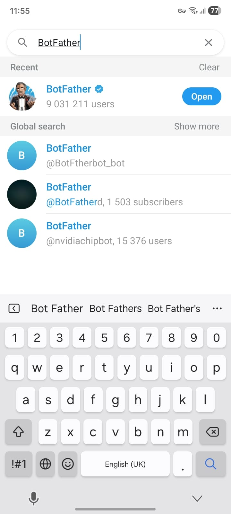
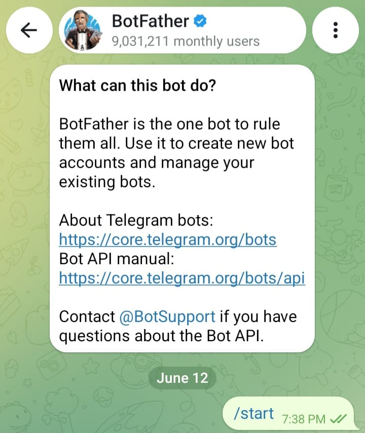
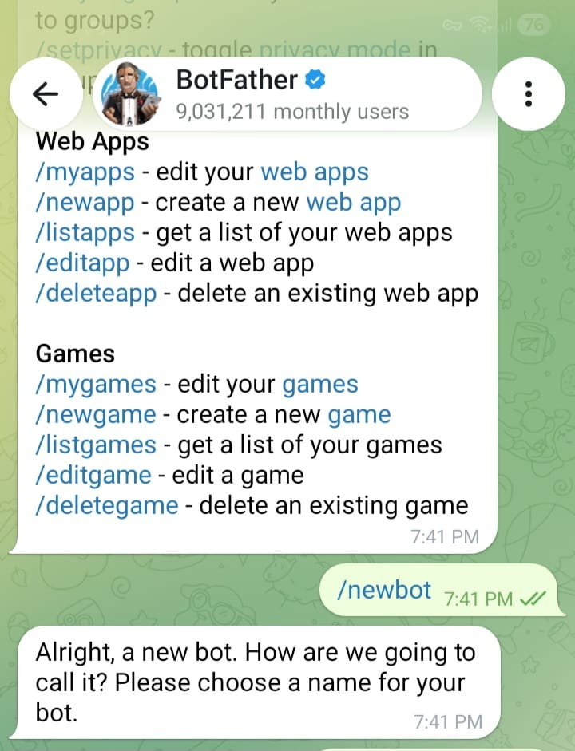
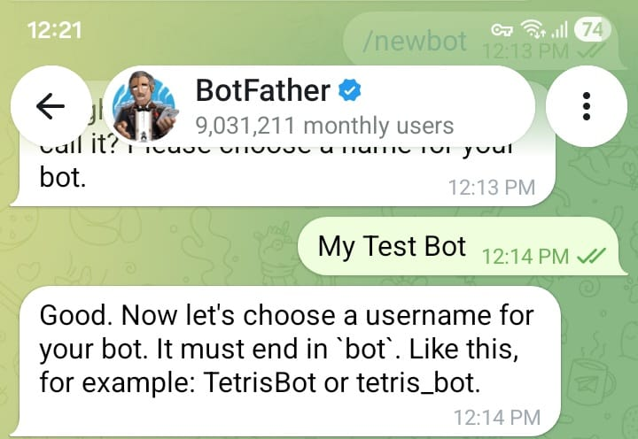
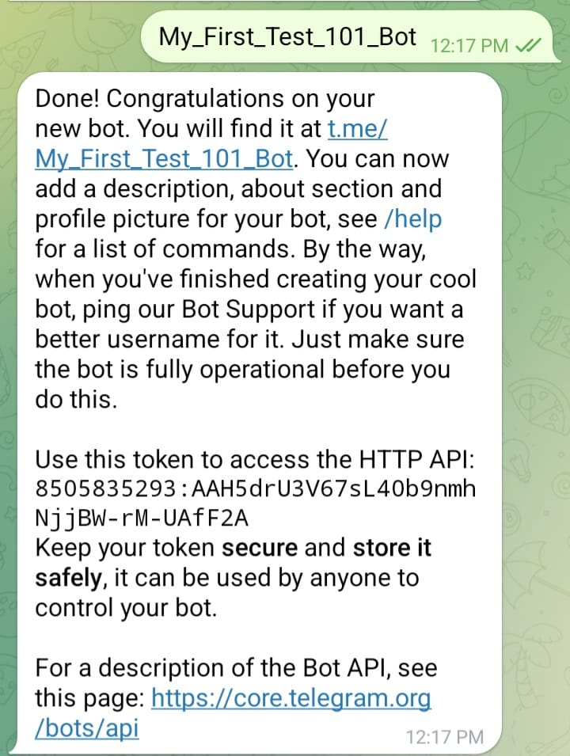
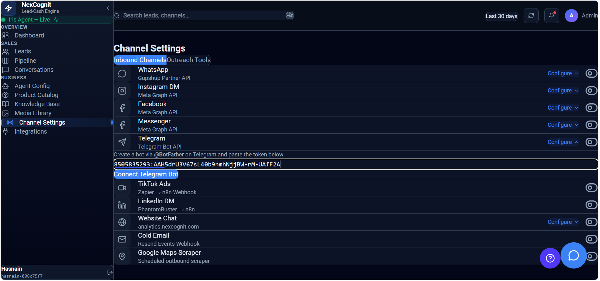
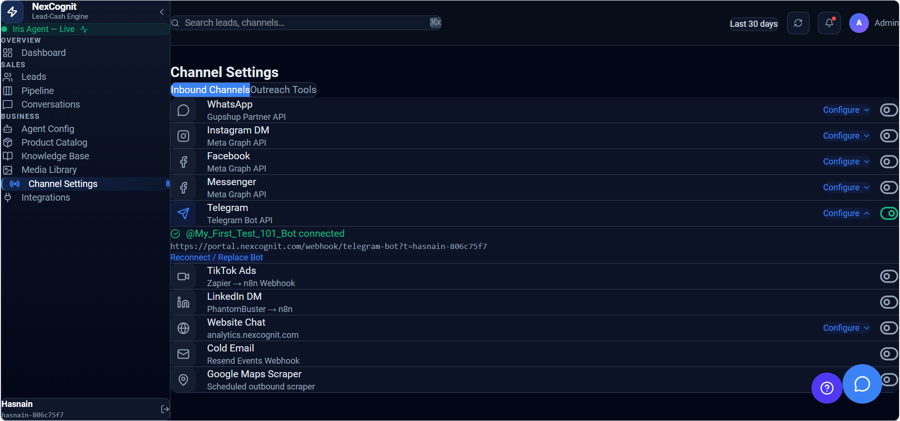
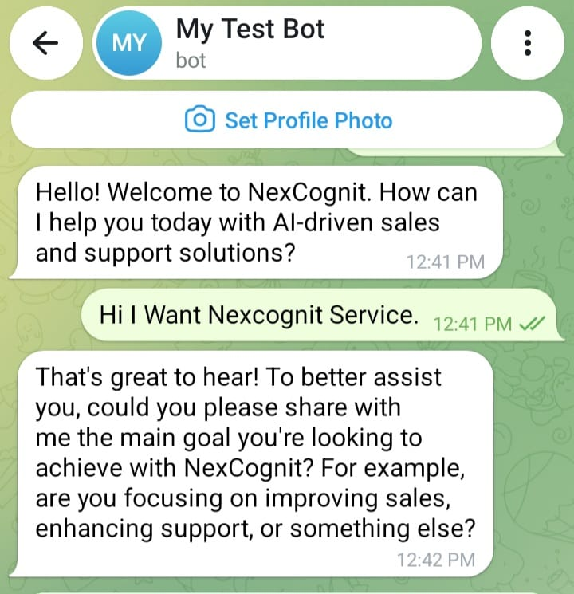

Telegram
Telegram lets you connect a bot to NexCognit so customers can start conversations and receive automated responses through Telegram. This guide walks through the setup flow from BotFather to the final connection in NexCognit.
Prerequisites
- You have access to Telegram.
- You are signed in to your NexCognit account.
- You are ready to create a bot and test it after configuration.
Step 1 — Search for BotFather in Telegram
BotFather is Telegram’s official bot management bot and is used to create a new Telegram bot for NexCognit.

Step 2 — Start the BotFather chat
Open the BotFather chat and start the conversation.

Step 3 — Send the /newbot command
Use the /newbot command to create a new Telegram bot.

Step 4 — Enter the bot name
Provide a display name for the new Telegram bot.

Step 5 — Copy the bot token
BotFather generates a bot token after the bot is created, and this token will be needed in NexCognit.

Step 6 — Paste the token into NexCognit
Open NexCognit Channel Settings, go to Telegram, and paste the Telegram bot token into the configuration form.

Step 7 — Confirm connected status
After saving the token, NexCognit should show that the Telegram channel is connected.

Step 8 — Send a test message
Send a test message to the Telegram bot and confirm that Iris responds correctly.

How Telegram works after setup
Once the Telegram bot is connected, customers can start a conversation directly in Telegram and NexCognit can respond with the configured assistant behavior. Those conversations can then be reviewed in the NexCognit platform.
Things to know
- Keep the bot token secure and do not share it publicly.
- After saving the configuration, test the bot with a simple message.
- If the bot does not respond, confirm that the token was pasted correctly and that the bot is active.